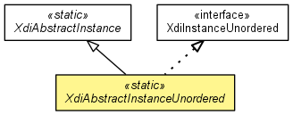

xdi2.core.features.nodetypes
Class XdiAbstractInstanceUnordered
java.lang.Object
 xdi2.core.features.nodetypes.XdiAbstractContext
xdi2.core.features.nodetypes.XdiAbstractSubGraph
xdi2.core.features.nodetypes.XdiAbstractInstance
xdi2.core.features.nodetypes.XdiAbstractInstanceUnordered
xdi2.core.features.nodetypes.XdiAbstractContext
xdi2.core.features.nodetypes.XdiAbstractSubGraph
xdi2.core.features.nodetypes.XdiAbstractInstance
xdi2.core.features.nodetypes.XdiAbstractInstanceUnordered
- All Implemented Interfaces:
- Serializable, Comparable<XdiContext>, XdiContext, XdiInstance, XdiInstanceUnordered, XdiSubGraph
- Direct Known Subclasses:
- XdiAttributeInstanceUnordered, XdiEntityInstanceUnordered
public abstract class XdiAbstractInstanceUnordered
- extends XdiAbstractInstance
- implements XdiInstanceUnordered

- See Also:
- Serialized Form
| Methods inherited from class xdi2.core.features.nodetypes.XdiAbstractContext |
compareTo, equals, fromContextNode, getBaseArcXri, getBaseArcXri, getContextNode, getXdiAttributeClass, getXdiAttributeSingleton, getXdiEntityClass, getXdiEntitySingleton, hashCode, toString |
XdiAbstractInstanceUnordered
protected XdiAbstractInstanceUnordered(ContextNode contextNode)
isValid
public static boolean isValid(ContextNode contextNode)
- Checks if a context node is a valid XDI unordered instance.
- Parameters:
contextNode - The context node to check.
- Returns:
- True if the context node is a valid XDI unordered instance.
fromContextNode
public static XdiInstanceUnordered fromContextNode(ContextNode contextNode)
- Factory method that creates an XDI unordered instance bound to a given context node.
- Parameters:
contextNode - The context node that is an XDI unordered instance.
- Returns:
- The XDI unordered instance.
createArcXri
public static XDI3SubSegment createArcXri(String identifier,
boolean mutable)
createArcXriFromUuid
public static XDI3SubSegment createArcXriFromUuid(String uuid,
boolean mutable)
createArcXriFromRandom
public static XDI3SubSegment createArcXriFromRandom(boolean mutable)
createArcXriFromHash
public static XDI3SubSegment createArcXriFromHash(String string,
boolean mutable)
isValidArcXri
public static boolean isValidArcXri(XDI3SubSegment arcXri)
Copyright © 2013. All Rights Reserved.